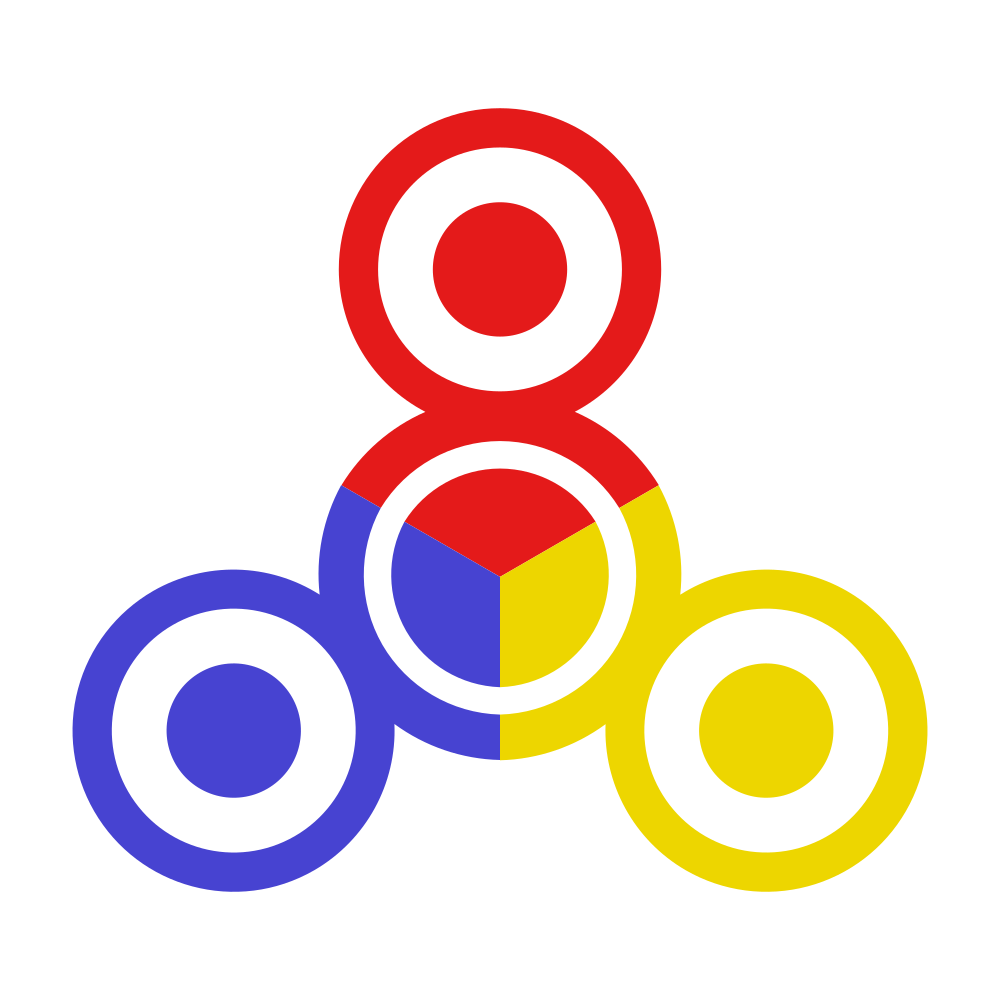

01
AI perspective one
First point of view
Your first response starts here
Submit a prompt to begin the discussion.

almat aiAsk a question. Get three AI perspectives, refined through discussion into a more considered answer.
The discussion
First point of view
Your first response starts here
Submit a prompt to begin the discussion.
A different angle
Another angle, considered
Compare ideas and discover what holds up.
A final perspective
A third voice joins in
Together, the models work toward a better answer.